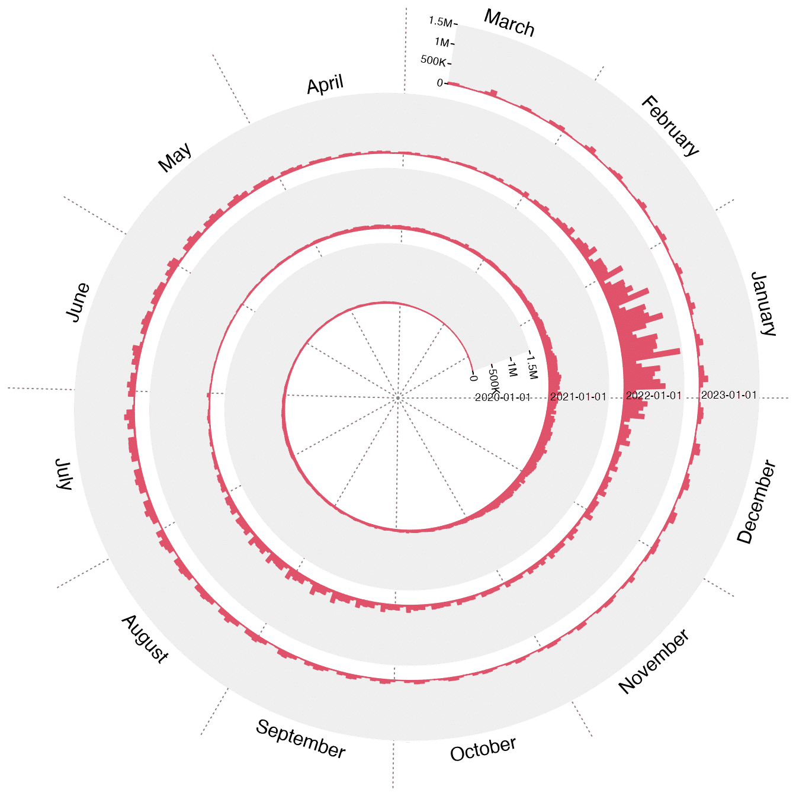
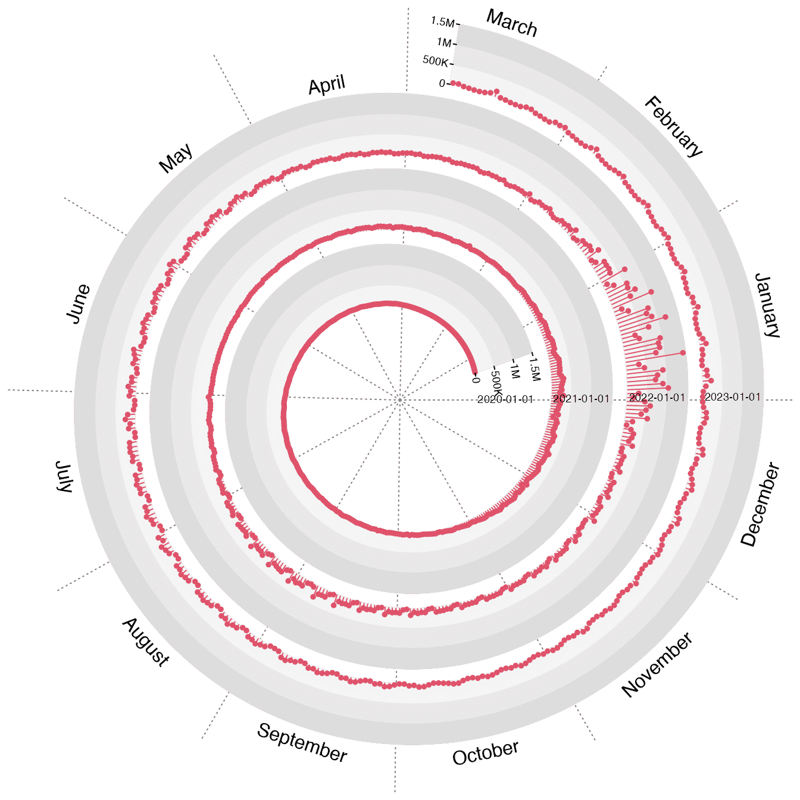

Spiral visualization on the COVID-19 daily increase
Zuguang Gu (z.gu@dkfz.de)
2024-06-14
Source:vignettes/spiral_covid.Rmd
spiral_covid.RmdThe COVID-19 daily increase is basically a time series data, thus it is natural to visualize it via spirals. As an example, we take the data for the United States and only the number of confirmed cases.
library(COVID19)
x = covid19(country = "United States", verbose = FALSE)
x = x[, c("date", "confirmed")]
x$date = as.Date(x$date)
# remove the leading and ending days with no data
na_range = range(which(!is.na(x$confirmed)))
x = x[seq(na_range[1], na_range[2]), ]
head(x)## date confirmed
## 17 2020-01-21 1
## 18 2020-01-22 1
## 19 2020-01-23 1
## 20 2020-01-24 2
## 21 2020-01-25 3
## 22 2020-01-26 5Some days have NA values. We assign them with the same value as the most recent days with non-NA values.
Now we can calculate the daily increase.
## date confirmed daily_increased
## 17 2020-01-21 1 1
## 18 2020-01-22 1 0
## 19 2020-01-23 1 0
## 20 2020-01-24 2 1
## 21 2020-01-25 3 1
## 22 2020-01-26 5 2
range(x$daily_increased)## [1] 0 1433977Making spiral is straightforward. First we initialize the layout with the time ranges, then create a track and draw bars in it. We additionally add the month names to sectors and labels representing the corresponding years.
library(spiralize)
library(lubridate)
spiral_initialize_by_time(xlim = range(x$date), normalize_year = TRUE)## 'unit_to_axis' is set to 'days'.
## 'period' is set to 'years'.
spiral_track(height = 0.8, ylim = c(0, 1.5e6))
spiral_bars(x$date, x$daily_increased, gp = gpar(fill = 2, col = 2))
spiral_yaxis(at = c(0, 5e5, 1e6, 1.5e6), labels = c("0", "500K", "1M", "1.5M"),
labels_gp = gpar(fontsize = 7))
# month names
dd = max(x$date)
day(dd) = 15
dd = dd + months(1:12)
spiral_text(dd, y = 1.5, month.name[month(dd)], facing = "inside", nice_facing = TRUE)
# labels of years
for(y in c(2020, 2021, 2022, 2023)) {
spiral_text(paste0(y, "-01-01"), TRACK_META$ycenter, paste0(y, "-01-01"),
gp = gpar(fontsize = 7))
}
We can improve the plot a little bit, such as making the background in gradients and change bars to “lolipops”.
spiral_initialize_by_time(xlim = range(x$date), normalize_year = TRUE)## 'unit_to_axis' is set to 'days'.
## 'period' is set to 'years'.
spiral_track(height = 0.8, gradient = 3, background_gp = gpar(fill = "#DDDDDD"),
ylim = c(0, 1.5e6))
spiral_lines(x$date, x$daily_increased, type = "h", gp = gpar(col = 2))
spiral_points(x$date, x$daily_increased, pch = 16, gp = gpar(col = 2))
spiral_yaxis(at = c(0, 5e5, 1e6, 1.5e6), labels = c("0", "500K", "1M", "1.5M"),
labels_gp = gpar(fontsize = 7))
# month names
dd = max(x$date)
day(dd) = 15
dd = dd + months(1:12)
spiral_text(dd, y = 1.5, month.name[month(dd)], facing = "inside", nice_facing = TRUE)
# labels of years
for(y in c(2020, 2021, 2022, 2023)) {
spiral_text(paste0(y, "-01-01"), TRACK_META$ycenter, paste0(y, "-01-01"),
gp = gpar(fontsize = 7))
}
I have implemented it as a Shiny application. The source code for generating this app is avaiable at https://gist.github.com/jokergoo/fa39ee3dcf20cbc13a31bbe93c3498fb. You can run it by:
source("https://gist.githubusercontent.com/jokergoo/fa39ee3dcf20cbc13a31bbe93c3498fb/raw/696f8331075085629a1d2b303c928c1f68249637/spiral_covid19_shiny.R")
shinyApp(ui = ui, server = server)
## R version 4.3.3 (2024-02-29)
## Platform: x86_64-apple-darwin20 (64-bit)
## Running under: macOS Sonoma 14.5
##
## Matrix products: default
## BLAS: /Library/Frameworks/R.framework/Versions/4.3-x86_64/Resources/lib/libRblas.0.dylib
## LAPACK: /Library/Frameworks/R.framework/Versions/4.3-x86_64/Resources/lib/libRlapack.dylib; LAPACK version 3.11.0
##
## locale:
## [1] en_GB.UTF-8/en_GB.UTF-8/en_GB.UTF-8/C/en_GB.UTF-8/en_GB.UTF-8
##
## time zone: Europe/Berlin
## tzcode source: internal
##
## attached base packages:
## [1] grid stats graphics grDevices utils datasets methods base
##
## other attached packages:
## [1] lubridate_1.9.3 spiralize_1.1.0 COVID19_3.0.3 knitr_1.45
##
## loaded via a namespace (and not attached):
## [1] bit_4.0.5 jsonlite_1.8.8 highr_0.10 rjson_0.2.21
## [5] crayon_1.5.2 compiler_4.3.3 jquerylib_0.1.4 systemfonts_1.0.6
## [9] textshaping_0.3.7 yaml_2.3.8 fastmap_1.1.1 R6_2.5.1
## [13] generics_0.1.3 shape_1.4.6.1 GetoptLong_1.0.5 htmlwidgets_1.6.4
## [17] circlize_0.4.16 desc_1.4.3 bslib_0.7.0 R.utils_2.12.3
## [21] rlang_1.1.3 cachem_1.0.8 xfun_0.43 fs_1.6.4
## [25] sass_0.4.9 GlobalOptions_0.1.2 bit64_4.0.5 timechange_0.3.0
## [29] memoise_2.0.1 cli_3.6.2 pkgdown_2.0.9 magrittr_2.0.3
## [33] digest_0.6.35 lifecycle_1.0.4 R.methodsS3_1.8.2 R.oo_1.26.0
## [37] vctrs_0.6.5 evaluate_0.23 data.table_1.15.4 ragg_1.3.1
## [41] colorspace_2.1-0 rmarkdown_2.26 purrr_1.0.2 tools_4.3.3
## [45] htmltools_0.5.8.1